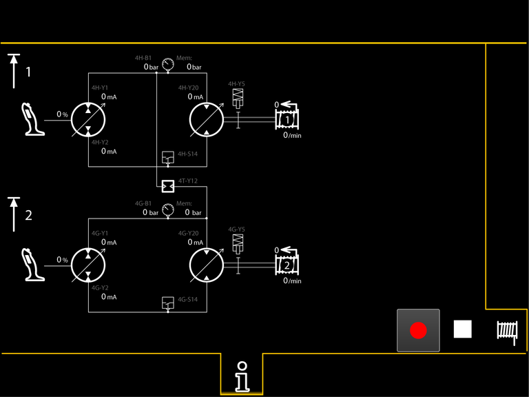
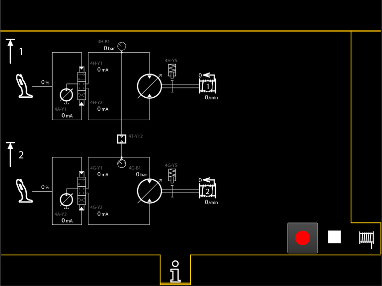
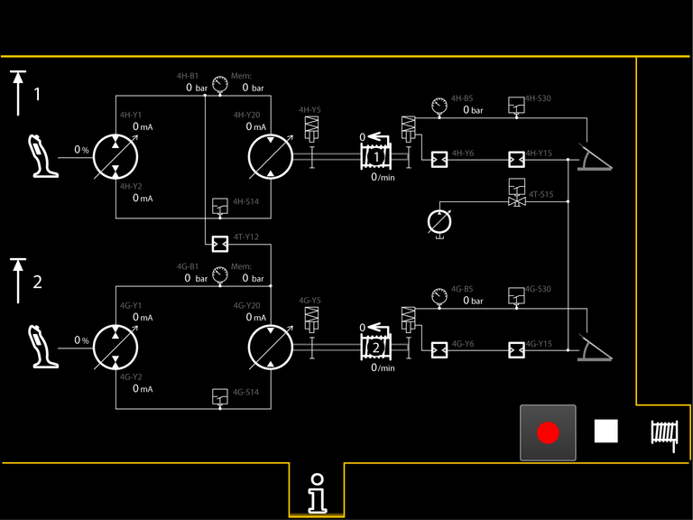
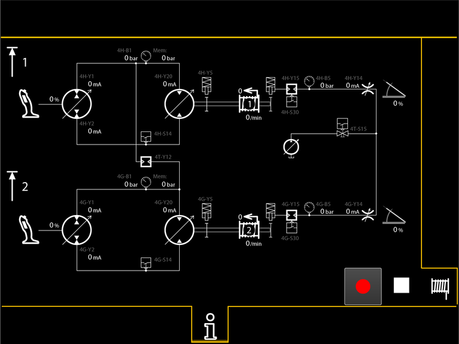
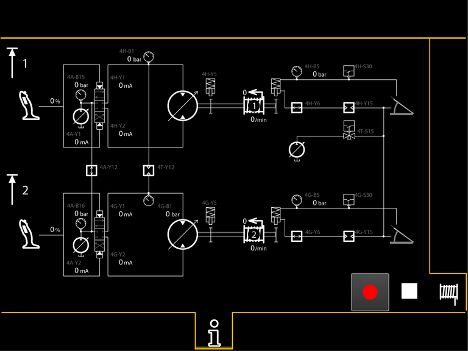
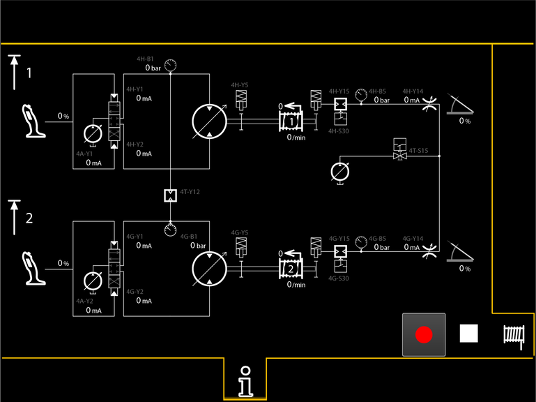

Bildschirmseite Winde1 und Winde2
Taste Bildschirmseite Winde1 und Winde2
Bildschirmseite Winde1 und Winde2 einblenden.

Fig. 2396: Bildschirmseite Winde1 und Winde2 - geschlossener Kreislauf ohne Freifall
Fig. 2396: Bildschirmseite Winde1 und Winde2 - geschlossener Kreislauf ohne Freifall

Fig. 2397: Bildschirmseite Winde1 und Winde2 - offener Kreislauf ohne Freifall
Fig. 2397: Bildschirmseite Winde1 und Winde2 - offener Kreislauf ohne Freifall

Fig. 2398: Bildschirmseite Winde1 und Winde2 - geschlossener Kreislauf mit hydraulischem Freifall
Fig. 2398: Bildschirmseite Winde1 und Winde2 - geschlossener Kreislauf mit hydraulischem Freifall

Fig. 2399: Bildschirmseite Winde1 und Winde2 - geschlossener Kreislauf mit elektrischem Freifall
Fig. 2399: Bildschirmseite Winde1 und Winde2 - geschlossener Kreislauf mit elektrischem Freifall

Fig. 2400: Bildschirmseite Winde1 und Winde2 - offener Kreislauf mit hydraulischem Freifall
Fig. 2400: Bildschirmseite Winde1 und Winde2 - offener Kreislauf mit hydraulischem Freifall

Fig. 2401: Bildschirmseite Winde1 und Winde2 - offener Kreislauf mit elektrischem Freifall
Fig. 2401: Bildschirmseite Winde1 und Winde2 - offener Kreislauf mit elektrischem Freifall
Taste Aufzeichnung (leuchtet rot)
Aufzeichnung starten.
Taste Stopp
Aufzeichnung stoppen.
Anzeige Winde1-Stopp (blinkt)
Hubendschalter an Lastort der Winde1 hat ausgelöst.
Maximale Hubhöhe der Winde1 ist erreicht.
Last an Winde1 heben und Hauptausleger senken sind gesperrt.
Anzeige Winde2-Stopp (blinkt)
Hubendschalter an Lastort der Winde2 hat ausgelöst.
Maximale Hubhöhe der Winde2 ist erreicht.
Last an Winde2 heben und Hauptausleger senken sind gesperrt.
Anzeige Winde1
– | Position 1: Seillage |
– | Aktive Seillängenmessung: Seilgeschwindigkeit m/min ( in/min) Keine Seillängenmessung: Windenumdrehung l/min ( oz/min) |
Positiver Wert: Seil auf Winde1 aufspulen.
Negativer Wert: Seil von Winde1 abspulen.
Anzeige Winde2
– | Position 1: Seillage |
– | Aktive Seillängenmessung: Seilgeschwindigkeit m/min ( in/min) Keine Seillängenmessung: Windenumdrehung l/min ( oz/min) |
Positiver Wert: Seil auf Winde2 aufspulen.
Negativer Wert: Seil von Winde2 abspulen.
Anzeige Aufzeichnung (blinkt rot)
Aufzeichnung ist gestartet.
Anzeige Stopp
Aufzeichnung ist gestoppt.
Anzeige Datenaufzeichnung gestört (leuchtet rot)
Speicherkapazität der Speicherkarte ist zu gering oder Datenaufzeichnung ist gestört.

Anzeige Bedienhebel
Bedienhebel.
Anzeige Pedal (Hydraulischer Freifall)
Pedal.
Anzeige Pedal (Elektrischer Freifall)
Pedal.
– | Verstellung 1 des Pedals. |
Anzeige Reduzierung
Geschwindigkeit der Winde1 und/oder der Winde2 ist begrenzt.
Anzeige Bewegungsrichtung
Bedienhebel wird in eine Richtung bewegt.
Bewegung des Werks wird eingeblendet.
Anzeige Bewegungsrichtung
Bedienhebel wird in eine Richtung bewegt.
Bewegung des Werks wird eingeblendet.
Anzeige Bewegungsrichtung
Bedienhebel wird in eine Richtung bewegt.
Bewegung des Werks wird eingeblendet.
Anzeige Bewegungsrichtung
Bedienhebel wird in eine Richtung bewegt.
Bewegung des Werks wird eingeblendet.
Anzeige Bremse
Bremse ist geschlossen.
Anzeige Bremse (leuchtet grün)
Bremse ist geöffnet.
Anzeige Bremse (leuchtet gelb)
Bremse kann nicht geöffnet werden.
Anzeige Bremse (leuchtet rot)
Bremse ist aufgrund einer Störung geöffnet.
Anzeige Drucksensor
Druck wird neben Anzeige in bar ( psi) oder psi ( psi) angezeigt.
Anzeige Überwachter Kugelhahn
Kugelhahn ist geschlossen.
Anzeige Überwachter Kugelhahn (leuchtet grün)
Kugelhahn ist geöffnet.
Anzeige Schaltventil
Schaltventil ist geschlossen.
Schaltventil ist spannungsfrei.
Hydrauliköl fließt nicht.
Anzeige Schaltventil (leuchtet grün)
Schaltventil ist geschlossen.
Strom fließt.
Hydrauliköl fließt nicht.
Anzeige Schaltventil (leuchtet gelb)
Schaltventil ist geschlossen.
Strom kann nicht fließen.
Hydrauliköl fließt nicht.
Anzeige Schaltventil
Schaltventil ist geschlossen.
Schaltventil ist spannungsfrei.
Hydrauliköl fließt nicht.
Anzeige Schaltventil (leuchtet grün)
Schaltventil ist geschlossen.
Strom fließt.
Hydrauliköl fließt nicht.
Anzeige Schaltventil (leuchtet gelb)
Schaltventil ist geschlossen.
Strom kann nicht fließen.
Hydrauliköl fließt nicht.
Anzeige Schaltventil
Schaltventil ist geöffnet.
Schaltventil ist spannungsfrei.
Hydrauliköl fließt.
Anzeige Schaltventil (leuchtet grün)
Schaltventil ist geöffnet.
Strom fließt.
Hydrauliköl fließt.
Anzeige Schaltventil (leuchtet rot)
Schaltventil ist geöffnet.
Strom fließt aufgrund einer Störung.
Hydrauliköl fließt.
Anzeige Schaltventil
Schaltventil ist geöffnet.
Schaltventil ist spannungsfrei.
Hydrauliköl fließt.
Anzeige Schaltventil (leuchtet grün)
Schaltventil ist geöffnet.
Strom fließt.
Hydrauliköl fließt.
Anzeige Schaltventil (leuchtet rot)
Schaltventil ist geöffnet.
Strom fließt aufgrund einer Störung.
Hydrauliköl fließt.
Anzeige Wegeventil
Ansteuerungsstrom wird neben Anzeige in mA angezeigt.
Anzeige Schaltventil (leuchtet grün)
Schaltventil ist geöffnet.
Anzeige Rückschlagventil
Rückschlagventil ist vorhanden.
Anzeige Kugelhahn
Kugelhahn ist geöffnet.
Anzeige Kugelhahn (leuchtet grün)
Kugelhahn ist geschlossen.
Anzeige Verstellbare Pumpe oder verstellbarer Motor
Ansteuerungsstrom der verstellbaren Pumpe oder des verstellbaren Motors wird neben Anzeige in mA angezeigt.
Anzeige Verstellbarer Motor
Ansteuerungsstrom des verstellbaren Motors wird neben Anzeige in mA angezeigt.
Anzeige Pumpe oder Motor
Ansteuerungsstrom der Pumpe oder des Motors wird neben Anzeige in mA angezeigt.
Anzeige Verstellbare Pumpe
Ansteuerungsstrom der verstellbaren Pumpe wird neben Anzeige in mA angezeigt.
Anzeige Drosselventil
Drosselventil ist geschlossen.
Drosselventil ist spannungsfrei.
Hydrauliköl fließt nicht.
Ansteuerungs-Strom-Wert wird neben der Anzeige in mA angezeigt.
Anzeige Drosselventil (leuchtet grün)
Drosselventil ist geöffnet.
Strom fließt.
Hydrauliköl fließt.
Ansteuerungs-Strom-Wert wird neben der Anzeige in mA angezeigt.